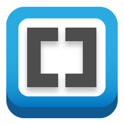
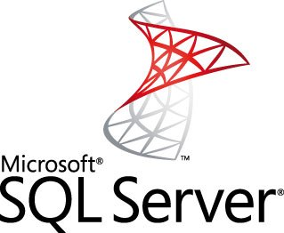
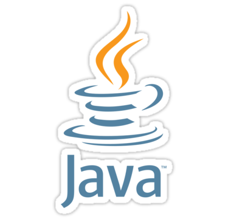
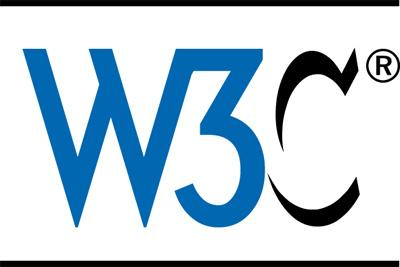
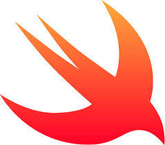

Links to useful free web and software development softwares:
-
 Microsoft SQL Server 2014 Express
Microsoft SQL Server 2014 Express
Microsoft SQL Server 2014 Express is a powerful and reliable free data management system that delivers a rich and reliable data store for lightweight Web Sites and desktop applications.
-
 Visual Studio Community 2017
Visual Studio Community 2017
Free, fully-featured IDE for students, open-source and individual developers
-
 Visual Studio Code
Visual Studio Code
Free and open source. Integrated Git, debugging and extensions.
-
 Eclipse OXYGEN
Eclipse OXYGEN
Eclipse is an integrated development environment (IDE) used in computer programming, and is the most widely used Java IDE.
-
Brackets
With focused visual tools and preprocessor support, Brackets is a modern text editor that makes it easy to design in the browser. It's crafted from the ground up for web designers and front-end developers.
-
 Android Studio
Android Studio
Android Studio provides the fastest tools for building apps on every type of Android device.
-
 Xcode 9
Xcode 9
With everything you need to create amazing apps for Apple platforms, Xcode 9 is unbelievably quick and consistently smooth while editing even the largest files.
-
 MongoDB
MongoDB
MongoDB is a document database with the scalability and flexibility that you want with the querying and indexing that you need
-
 Node.js
Node.js
As an asynchronous event driven JavaScript runtime, Node is designed to build scalable network applications.
Helpful links to online web resources:
-
Tutorials for SQL Server Management Studio
The SQL Server Management Studio (SSMS) tutorial introduces you to the integrated environment for managing your SQL Server infrastructure.
-
 C# Guide
C# Guide
The C# guide provides many resources about the C# language. Depending on your experience with programming, or with the C# language and .NET, you may wish to explore different sections of this guide.
-
 .Net Core
.Net Core
You can get started developing .NET Core apps by following these step-by-step tutorials.
-
The Java™ Tutorials
The Java Tutorials are practical guides for programmers who want to use the Java programming language to create applications. They include hundreds of complete, working examples, and dozens of lessons.
-
Web Accessibility Tutorials on W3.org
The tutorials cover various accessibility topics, based on common tasks in web projects. For example, they show you how to provide accessible images and tables using a variety of web technologies, including HTML4, HTML5, CSS3, WAI-ARIA, MathML, and SVG. The concepts and techniques explained in the tutorials apply to other formats as well.
-
Android Developer Guides
Here you can find helpful documents on how to build your first app, how to build Android apps using APIs, and other essential developer guides that you should be familiar with.
-
Start Developing iOS Apps (Swift)
Start Developing iOS Apps (Swift) is the perfect starting point for learning to create apps that run on iPhone and iPad. View this set of incremental lessons as a guided introduction to building your first app—including the tools, major concepts, and best practices that will ease your path.